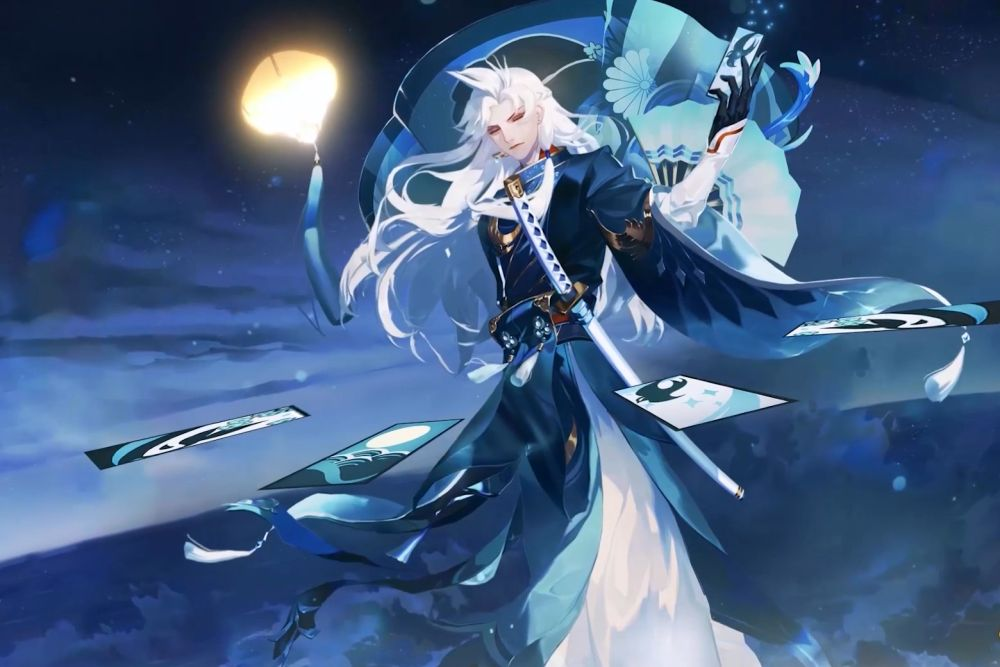

 Susabi is a divine ambassador in the game Onmyoji. He can predict the astrology and control the destiny of mankind. He is a mysterious man whose whereabouts are uncertain and who never reveals his inner self. His words and actions reveal an inviolable majesty. With great strength, even the god of death is very respectful to him. He did not say to anyone who he was and where he came from.